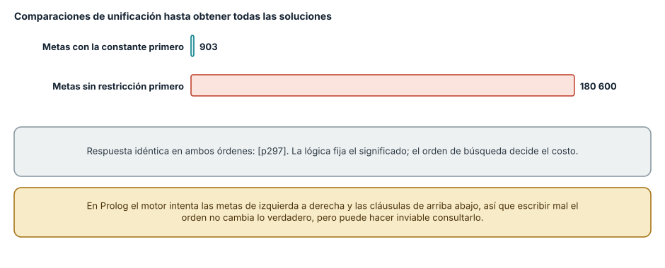
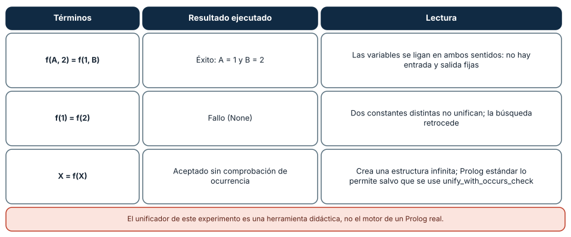
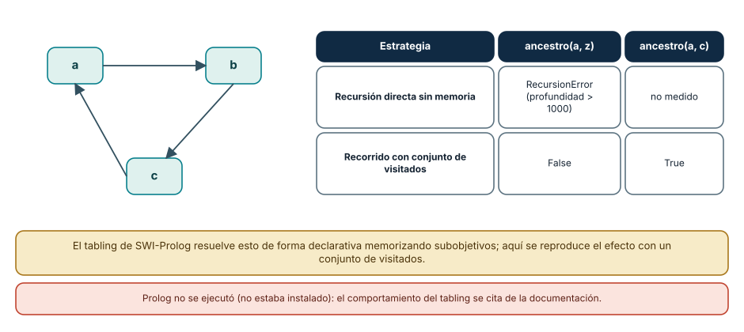

← SE-077 — Programación declarativa y basada en reglas · ↑ Parte 06 · 📚 Índice completo · 🌐 Portal · SE-079 — Programación orientada a eventos →
Punto profesional y fundamento pedagógico
Punto profesional. La clase existe para explicar unificación, búsqueda y backtracking como mecanismo operacional de la lógica.
Por qué aparece aquí. Se sitúa después de Programación declarativa y basada en reglas y antes de Programación orientada a eventos: convierte el conocimiento anterior en una decisión observable que la clase siguiente podrá reutilizar. La continuidad se comprueba en el artefacto, no por compartir vocabulario.
Error conceptual que debe corregir. Leer Prolog como ejecución exhaustiva sin depender de orden.
Secuencia de aprendizaje. Antes de leer la solución, el estudiante predice el resultado del caso normal y del error conceptual anterior. Luego explica un caso resuelto paso a paso, construye un contraejemplo que cambie la decisión y, sin consultar el texto, reconstruye el mecanismo y lo aplica a una entrada nueva. La secuencia usa predicción, explicación propia, contraste y recuperación. ICAP distingue participación de construcción de conocimiento; How People Learn II exige conectar conocimiento previo, contexto y transferencia; la práctica de recuperación respalda producir de nuevo la explicación tras una demora; y Education for Life and Work exige devolución que explique la causa del error.
Evidencia de aprendizaje. Resolution-trace.md con sustituciones, árbol de búsqueda y corte problemático. Debe contener predicción previa, observación, explicación causal, contraejemplo, criterio de aceptación y una nota de qué dato haría cambiar la conclusión.
Límite de la conclusión. La verdad lógica y el comportamiento operacional no son equivalentes.
Trazabilidad fuente → afirmación
| Fuente primaria u oficial | Afirmación que respalda | Lo que no prueba |
|---|---|---|
| SWI-Prolog Reference Manual | Hechos, reglas, unificación, búsqueda y límites operacionales; autoridad: SWI-Prolog project | No demuestra por sí sola que el artefacto del estudiante sea correcto. |
| SWEBOK Guide v4.0a | Construcción, diseño y fundamentos profesionales; autoridad: IEEE Computer Society | No demuestra por sí sola que el artefacto del estudiante sea correcto. |
Antes de empezar
Esta clase continúa el motor de reglas comparado de la Parte 06. Recupera la evidencia de la clase anterior, añade una decisión propia de Programación lógica y resolución y deja un artefacto que la clase siguiente deberá consumir. La pregunta activa es: ¿Cómo produce respuestas un motor lógico a partir de relaciones, variables y búsqueda?
Prerrequisitos
- Haber completado la clase anterior o reconstruir su contrato y evidencia.
- Python 3.11 o posterior, terminal, editor y Git; un segundo runtime es opcional y debe declararse.
- Trabajar con fixtures sintéticos: ninguna observación necesita datos de una persona o sistema real.
Problema auténtico
El motor de reglas comparado debe responder qué prueba es admisible y también por qué. Enumerar rutas a mano duplica combinaciones; una relación lógica puede derivarlas, pero una regla recursiva mal ordenada no termina.
Objetivos observables
Al terminar podrás explicar los cinco mecanismos de esta clase, predecir su comportamiento antes de ejecutar, construir un caso normal y uno límite, diagnosticar el fallo controlado, comparar una alternativa y entregar evidencia que otra persona pueda reproducir.
Mapa conceptual
Ver la notación fuente del diagrama
flowchart LR
N1[Términos, hechos / consultas] --> N2[Unificación] --> N3[Resolución / backtracking] --> N4[Negación / mundo cerrado] --> N5[Restricciones / explicación]
N5 -->|fallo o cambio| N1El mapa se lee como una cadena de razonamiento, no como fases obligatorias del runtime. La flecha de retorno indica que un fallo o cambio de requisito obliga a revisar el modelo inicial; no autoriza a parchear solo la última salida.
Temas y por qué importan
| Tema | Por qué cambia una decisión profesional | Evidencia mínima |
|---|---|---|
| Términos, hechos y consultas | Un programa lógico describe relaciones mediante términos. | Predicción, traza causal y contraejemplo de Términos, hechos y consultas en resolution-trace.md |
| Unificación | Unificar busca una sustitución compatible entre estructuras. | Predicción, traza causal y contraejemplo de Unificación en resolution-trace.md |
| Resolución y backtracking | El motor selecciona metas, prueba cláusulas y retrocede cuando una elección falla. | Predicción, traza causal y contraejemplo de Resolución y backtracking en resolution-trace.md |
| Negación y mundo cerrado | En muchos sistemas Prolog, no poder demostrar una meta permite tratarla como falsa bajo supuestos de mundo cerrado. | Predicción, traza causal y contraejemplo de Negación y mundo cerrado en resolution-trace.md |
| Restricciones y explicación | La programación lógica con restricciones mantiene dominios posibles y propaga reducciones antes de enumerar. | Predicción, traza causal y contraejemplo de Restricciones y explicación en resolution-trace.md |
Conceptos y decisiones
1. Términos, hechos y consultas
Un programa lógico describe relaciones mediante términos. Una consulta pregunta qué sustituciones vuelven verdadera una relación. La dirección no siempre está fijada como en una función, aunque la implementación y los modos de uso sí afectan terminación y rendimiento.
2. Unificación
Unificar busca una sustitución compatible entre estructuras. No es asignación mutable: una variable lógica queda vinculada dentro de una rama de búsqueda. El chequeo de ocurrencia y las extensiones del sistema determinan qué términos son admitidos, por lo que no conviene extrapolar desde pseudocódigo.
3. Resolución y backtracking
El motor selecciona metas, prueba cláusulas y retrocede cuando una elección falla. Ese mecanismo enumera alternativas sin escribir bucles explícitos. Orden de metas y cláusulas puede cambiar drásticamente costo o terminación aunque el significado declarativo pretendido parezca igual.
4. Negación y mundo cerrado
En muchos sistemas Prolog, no poder demostrar una meta permite tratarla como falsa bajo supuestos de mundo cerrado. Eso no equivale a negar un hecho desconocido. El motor de reglas comparado distingue denied, not_proven y not_applicable para no convertir ausencia de evidencia en evidencia de ausencia.
5. Restricciones y explicación
La programación lógica con restricciones mantiene dominios posibles y propaga reducciones antes de enumerar. Puede expresar horarios o compatibilidad con claridad, pero requiere inspeccionar qué restricciones sustentan una respuesta. La traza bruta del motor no reemplaza una explicación de dominio.
El orden de las metas: misma respuesta, otro trabajo
En programación lógica se declaran hechos y reglas y se pregunta; el motor busca por unificación y retroceso. Para observar el costo se implementó un resolvedor mínimo en Python (unificación, retroceso, sin optimizaciones) y se contó cuántas comparaciones de unificación hacía. Con 300 hechos padre(pN, pN+1) y la consulta «¿quién es ancestro de p300 a tres pasos?», escribir las metas empezando por la que tiene la constante p300 necesitó 903 comparaciones; escribirlas con las metas sin restricción primero necesitó 180 600, unas 200 veces más, con la misma respuesta (p297) en ambos casos.
Esa es la diferencia entre lo que la lógica garantiza (el significado de la consulta) y lo que el motor hace (una búsqueda ordenada de izquierda a derecha y de arriba abajo). Un motor de Prolog real trabaja así por defecto, y por eso ordenar las metas de más a menos restrictivas es una técnica básica de rendimiento. Mover una meta no cambia lo verdadero; puede cambiar lo calculable.

Cómo leer la figura. Cada barra es el trabajo de buscar todas las soluciones con un orden de metas; las respuestas coinciden. Dónde deja de valer: el resolvedor es didáctico, sin indexación de argumentos ni los trucos de un Prolog real (SWI-Prolog indexa por primer argumento y por otros), de modo que la cifra de 180 600 sería menor allí. El mecanismo, que el orden decide el costo, sí generaliza.
Unificación: ligar variables en ambos sentidos
Unificar dos términos significa encontrar una sustitución que los haga idénticos. Tres casos ejecutados: f(A, 2) con f(1, B) tuvo éxito con A = 1 y B = 2, de modo que una misma relación sirve de entrada y de salida; f(1) con f(2) falló, y el fallo es lo que hace retroceder a la búsqueda; y X con f(X) fue aceptado, porque el resolvedor mínimo no hace la comprobación de ocurrencia: crea una estructura infinita. SWI-Prolog tiene unify_with_occurs_check/2 para exigir la comprobación, y por defecto la omite por costo.
La consecuencia de diseño es que en lógica no hay «parámetros de entrada» y «de salida» fijos: la relación padre(X, Y) responde quién es padre de quién, o de quién es padre ana, según qué argumentos vengan instanciados. Eso permite reutilizar reglas en varias direcciones, a cambio de que los predicados no siempre terminen para cualquier combinación.

Cómo leer la figura. Cada fila es una unificación ejecutada y su lectura. Dónde deja de valer: el unificador es una versión mínima con tuplas y un diccionario; no maneja listas con barra, ni predicados aritméticos con is, ni atributos de variables. Prolog no estaba instalado en el equipo, por lo que no se ejecutó un Prolog real.
Ciclos y terminación
La lógica declarativa no asegura que una consulta termine. Con hechos que forman un ciclo a → b → c → a, la definición recursiva ingenua «a es ancestro de z si hay un arco de a a y y y es ancestro de z» recorre el ciclo para siempre; en Python terminó con RecursionError (profundidad superior a 1000) en lugar de responder «no». Un recorrido con un conjunto de visitados respondió False para z y True para c.
En Prolog, este problema se resuelve con tabling (memorización de subobjetivos), que SWI-Prolog implementa y documenta; sin tabling, la consulta equivalente también puede no terminar. La lección general es que escribir «lo que es verdad» no basta cuando el motor la busca de forma ordenada: hay que pensar en el espacio de búsqueda, igual que se piensa en la pila en la clase de procedimientos.

Cómo leer la figura. El grafo muestra el ciclo; la tabla compara la recursión sin memoria con el recorrido con visitados para dos consultas. Dónde deja de valer: el «tabling» no se ejecutó; se reproduce su efecto con visitados, que es un algoritmo distinto (búsqueda en profundidad) que sirve para ilustrar. El comportamiento en SWI-Prolog se cita de su manual.
Definiciones de trabajo
- términos, hechos y consultas: un programa lógico describe relaciones mediante términos.
- unificación: unificar busca una sustitución compatible entre estructuras.
- resolución y backtracking: el motor selecciona metas, prueba cláusulas y retrocede cuando una elección falla.
- negación y mundo cerrado: en muchos sistemas prolog, no poder demostrar una meta permite tratarla como falsa bajo supuestos de mundo cerrado.
- restricciones y explicación: la programación lógica con restricciones mantiene dominios posibles y propaga reducciones antes de enumerar.
Las definiciones son operativas para el motor de reglas comparado. No convierten términos con historia más amplia en sinónimos y deben contrastarse con la documentación primaria enlazada al final.
Ejemplo mínimo
authorized(case_17).
observed(case_17, high_latency).
next(Case, inspect_transport) :-
authorized(Case),
observed(Case, high_latency).
% Consulta: ?- next(case_17, Action).Antes de ejecutar, predice estado, resultado y error. Después registra versión, comando y salida. Si el fragmento es pseudocódigo o pertenece a otro lenguaje, etiquétalo como tal y no afirmes que fue ejecutado.
Ejemplo profesional
En el motor de reglas comparado, una recomendación contiene acción, evidencia usada, versión de política y explicación. La implementación de esta clase debe conservar ese contrato aunque cambie la forma interna. El caso profesional no pregunta únicamente si devuelve una cadena: pregunta quién puede producirla, qué estado observa, cómo falla y qué rastro permite disputar una decisión incorrecta.
Compara el caso normal con autorización falsa, evidencia incompleta, empate y repetición. Un mecanismo es apropiado cuando esas diferencias quedan visibles y localizadas; es peligroso cuando dependen de orden accidental, estado oculto o una convención que el consumidor no puede conocer.
Práctica guiada
- Copia el contrato de entrada y salida antes de escribir implementación.
- Predice el caso normal y un límite; identifica la invariante que no puede romperse.
- Implementa la versión mínima sin I/O dentro del núcleo.
- Ejecuta el caso y conserva comando, versión y salida bajo
evidence/. - Introduce el fallo controlado, reduce la reproducción y formula dos hipótesis rivales.
- Corrige la causa, añade regresión y ejecuta el conjunto completo.
- Compara con otro paradigma o lenguaje indicando qué semántica se preserva.
Ejercicios
- Orden: escribe tres metas encadenadas sobre un conjunto de hechos propio y mide inferencias en los dos órdenes; explica cuál conviene y por qué.
- Unificar a mano: unifica
g(X, h(Y), 3)cong(a, h(b), Z)y escribe la sustitución resultante; luego escribe un caso que falle. - Terminación: define una relación recursiva que no termine en un grafo con ciclo y arregla su terminación con visitados.
- Reversibilidad: usa la misma relación
padrepara preguntar quién es padre decarlay de quién es padreana, y explica qué argumentos cambian de papel.
Reto verificable
Entrega implementación, fixtures, pruebas y un informe corto. Se aprueba si otra persona ejecuta desde checkout limpio, obtiene los mismos resultados y puede relacionar cada rama o transformación con una regla del dominio. No se aprueba por cantidad de archivos ni por usar la sintaxis característica del paradigma.
Caso conductor
El motor de reglas comparado recibe una observación autorizada, evalúa reglas y devuelve una recomendación explicable. En esta clase, ejecuta el caso latency_ms=900, el límite latency_ms=800, el contraejemplo authorized=false y una entrada incompleta. Cambia después una sola regla y revisa qué archivos, pruebas y trazas debieron modificarse. Esa superficie de cambio alimenta la comparación final de la parte.
Preguntas frecuentes
¿Programación lógica es lo mismo que Prolog?
No. Prolog es un lenguaje concreto, con orden de búsqueda y operaciones extralógicas (corte, aritmética). La programación lógica es el paradigma: hechos, reglas y resolución. Otros sistemas, como Datalog, evitan el retroceso infinito limitando el lenguaje.
¿Por qué el orden de las metas importa si la lógica no tiene orden?
Porque el motor ejecuta una estrategia concreta (de izquierda a derecha, con retroceso). La respuesta correcta no depende del orden, pero el costo y la terminación sí.
¿Qué es la comprobación de ocurrencia?
Una verificación al unificar una variable con un término que la contiene (X con f(X)). Se omite por costo en Prolog estándar; si se omite, aparecen estructuras infinitas que pueden colgar el programa.
¿Cuándo es útil este paradigma en software real?
Para problemas de búsqueda con restricciones, análisis de reglas, verificación y consultas sobre relaciones (Datalog en análisis de código y en seguridad). No es el modelo habitual para servicios con E/S.
Fallo controlado y diagnóstico
Define una regla recursiva que se invoca antes del caso base y observa no terminación. Reordena metas, acota el dominio y conserva una consulta que demuestre respuesta y finalización.
Registra síntoma, entrada mínima, hipótesis, observación que descarta cada hipótesis, causa, corrección y prueba de regresión. No cambies simultáneamente implementación, fixture y expectativa.
Práctica: define el ancestro con recursión por la izquierda sobre un ciclo y lánzalo con un destino inexistente. Síntoma esperado: RecursionError en Python (o una consulta que no responde en Prolog sin tabling). Hipótesis rivales: (a) el destino no existe; (b) el motor entra en un ciclo. Observación que las separa: limitar la profundidad y registrar los nodos visitados; si se repite a, hay ciclo. Corrección: conjunto de visitados (o tabling en Prolog). Regresión: una prueba con un grafo cíclico que exige la respuesta «no» en tiempo acotado.
Errores comunes y cómo corregirlos
| Síntoma | Causa | Corrección |
|---|---|---|
| La consulta no termina | Recursión por la izquierda sobre datos con ciclos | Memorizar subobjetivos (tabling) o llevar un conjunto de visitados |
| La respuesta es correcta pero tarda mucho | Metas poco restrictivas primero | Ordenar de más a menos restrictiva |
| Una variable queda ligada a una estructura infinita | Unificación sin comprobación de ocurrencia | Usar la versión con comprobación cuando el dominio lo requiera |
| Un predicado solo funciona en un sentido | Se asumieron argumentos de entrada y salida fijos | Probar la relación en todas las combinaciones previstas |
| Se confunde «no hay solución» con «no demostrado» | Mundo cerrado: lo no derivable se toma como falso | Declarar el supuesto de mundo cerrado en la documentación |
Entorno y archivos clave
work/SE-078/
├── README.md
├── rule_engine/
│ ├── domain.py
│ └── se_078.py
├── fixtures/cases.json
├── tests/test_se_078.py
└── evidence/diagnosis.mdEl README declara plataforma, runtimes, comandos, limpieza y límites. Evita dependencias externas cuando la biblioteca estándar permita observar el mecanismo; si agregas una, fija procedencia y versión.
Seguridad, ética y accesibilidad
- la autorización forma parte del dominio y no se infiere por ausencia de rechazo;
- no uses
eval, reglas descargadas ni serialización insegura; - limita colas, recursión, tamaño de entrada y tiempo de evaluación;
- redacta trazas y conserva una explicación textual además de color o animación;
- una recomendación automatizada debe poder revisarse, impugnarse y corregirse;
- respeta licencias de ejemplos y atribuye adaptaciones.
Puente hacia el trabajo con agentes
Los agentes que razonan sobre restricciones o planes (qué herramienta puede cumplir una condición) usan a veces solvers o motores de reglas que buscan por resolución, y heredan sus problemas: la respuesta depende del orden de las metas y la búsqueda puede no terminar. El harness debe limitar el presupuesto de inferencia (profundidad, pasos y tiempo) y tratar el agotamiento como un resultado explícito, no como una respuesta negativa. Las partes sobre planificación y verificación de agentes retoman la terminación acotada.
Transferencia
Traslada un fixture al segundo modelo o lenguaje. Compara representación de ausencia, error, mutabilidad, orden y cancelación. La transferencia está lograda cuando el contrato se conserva y las diferencias están explicadas, no cuando la sintaxis se parece.
Evaluación y evidencia
| Criterio | Evidencia para aprobar |
|---|---|
| comprensión | explicación causal de los cinco mecanismos |
| corrección | normal, límite, inválido y contraejemplo |
| diseño | estado, efectos y contrato localizables |
| diagnóstico | reproducción mínima y regresión |
| transferencia | comparación semántica, no estética |
| reproducibilidad | versiones, comandos, salida y límites |
Fuentes
- Python Language Reference — Semántica de sentencias, funciones, clases, generadores y corrutinas; autoridad: Python Software Foundation.
- The Rust Programming Language — Ownership, enums, traits, errores y concurrencia sin carreras de datos; autoridad: Rust project.
- SWI-Prolog Reference Manual — Hechos, reglas, unificación, búsqueda y límites operacionales; autoridad: SWI-Prolog project.
- ReactiveX Observable Contract — Notificaciones, terminación, errores y control de flujo observable; autoridad: ReactiveX project.
- Erlang System Documentation: Processes — Procesos, buzones, envío de mensajes, enlaces y monitores; autoridad: Erlang/OTP project.
- SWEBOK Guide v4.0a — Construcción, diseño y fundamentos profesionales; autoridad: IEEE Computer Society.
Fuentes verificadas para las mediciones de esta clase (enlaces comprobados con curl el 2026-11-13):
- SWI-Prolog: tabling y
unify_with_occurs_check/2: memorización de subobjetivos y unificación con comprobación; respaldan las figuras 2 y 3. - SWI-Prolog Reference Manual: estrategia de búsqueda y orden de cláusulas; respalda la figura 1.
- Robinson, J. A. (1965), «A Machine-Oriented Logic Based on the Resolution Principle», *Journal of the ACM* 12(1), doi:10.1145/321250.321253: origen de la resolución y la unificación. El editor devolvió 403 a
curl, por lo que el DOI no se verificó por red.
Cada fuente respalda el mecanismo indicado; ninguna demuestra que la implementación del motor de reglas comparado sea correcta. Esa afirmación depende de fixtures, pruebas, trazas y revisión reproducible.
Límites y siguiente paso
La resolución lógica depende de supuestos operacionales y no gestiona por sí sola una secuencia temporal de eventos. La siguiente clase convierte entradas externas en eventos con contrato y ciclo de vida.
Glosario
- términos, hechos y consultas: un programa lógico describe relaciones mediante términos.
- unificación: unificar busca una sustitución compatible entre estructuras.
- resolución y backtracking: el motor selecciona metas, prueba cláusulas y retrocede cuando una elección falla.
- negación y mundo cerrado: en muchos sistemas prolog, no poder demostrar una meta permite tratarla como falsa bajo supuestos de mundo cerrado.
- restricciones y explicación: la programación lógica con restricciones mantiene dominios posibles y propaga reducciones antes de enumerar.
← SE-077 — Programación declarativa y basada en reglas · ↑ Parte 06 · 📚 Índice completo · 🌐 Portal · SE-079 — Programación orientada a eventos →